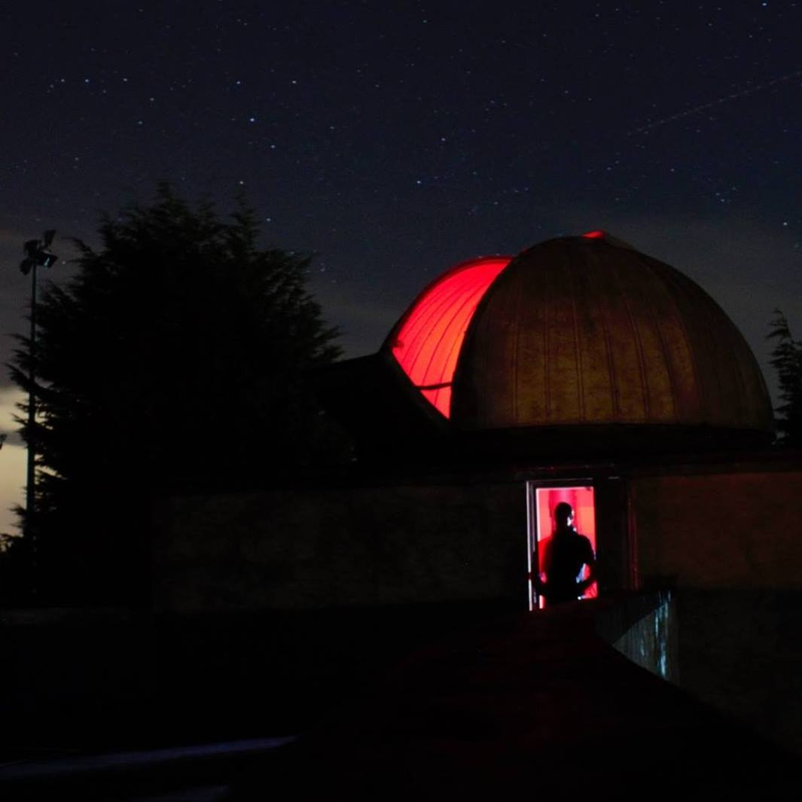

About Me

Education:
2021-Present: PhD at Institute for Astronomy, University of Edinburgh (Supervisors: Prof. Philip Best, Dr. Kenneth Duncan, Prof. Huub Rottgering, Dr. Rohit Kondapally)
Research Interests: Cosmic star formation, galaxy formation and evolution, high-redshift Universe, observational astrophysics
Publications: Just started my PhD so in progress!
Research

Cosmic Star Formation
The most fundamental measurements for galaxy evolution studies are the evolution of the
cosmic star-formation rate density as a function of cosmic time and the distribution of the star-formation rate density amongst
the galaxy population at each epoch. Current studies of star formation at high redshifts are almost ubiquitously based on the
ultraviolet continuum emission; however, this is heavily affected by dust extinction, requiring large and uncertain corrections.
I'm currently focussed on using alternative, dust independent, techniques to make these critical measurements in a robust manner,
using large and unbiased samples of star-forming galaxies out to the highest redshifts.
James Webb Emission Line Survey (JELS)
Narrow-band filters are a powerful tool used to select emission line galaxies across
cosmic time by isolating and capturing the light from emission lines only and neglecting the background continuum emission present when using
broad-band filters. Galaxies are identified on the strength of their emission line and crudely represent a star-formation rate-selected sample,
which lie in a narrow redshift range. A number of narrow-band filters combined can target H-alpha emitters across a wide range of redshifts,
yielding large and representative samples at each epoch and with a uniform selection function (for example from the UKIRT large Campaign Project HiZELS).
Currently, the evolution in the star-formation rate density has been traced across the epoch of peak activity in galaxies, as well as its distribution
amongst the galaxy population. The upcoming James Webb Emission line survey will provide samples of H-alpha-selected star-forming galaxies selected
from JWST narrow-band imaging to probe lower-luminosity star formation back to the highest redshifts.
LOFAR and WEAVE-LOFAR
LOFAR is a new-generation radio telescope, constructed in the Netherlands and around Europe, which commenced operations in 2012.
It has opened up a completely new low-frequency radio regime, as well as offering the deepest large-sky area radio surveys currently available.
Radio observations from a 5-yr large programme with LOFAR (Low Frequency Array) has be used to obtain the deepest,
wide-area radio survey in the best-studied extragalactic fields where I work on the 'LoTSS Deep Fields' (which had its first data release in 2021) to study the
evolution of star-forming galaxies across cosmic time. WAEVE-LOFAR will provide dedicated optical spectroscopy of all (~240k) detected radio sources
using the new WEAVE spectrograph. This will determine the distribution of star-formation as independent functions of galaxy mass,
environment and redshift, out to the peak epoch of star formation activity at z~2, and enable a global measure of the star
formation rate density back to the Epoch of Reionisation.
Contact
Email:
Address: